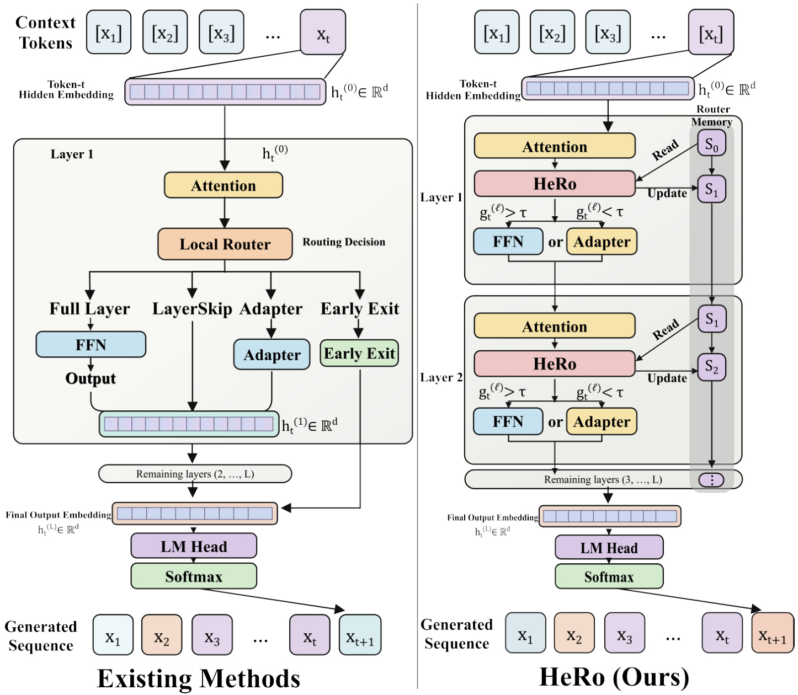
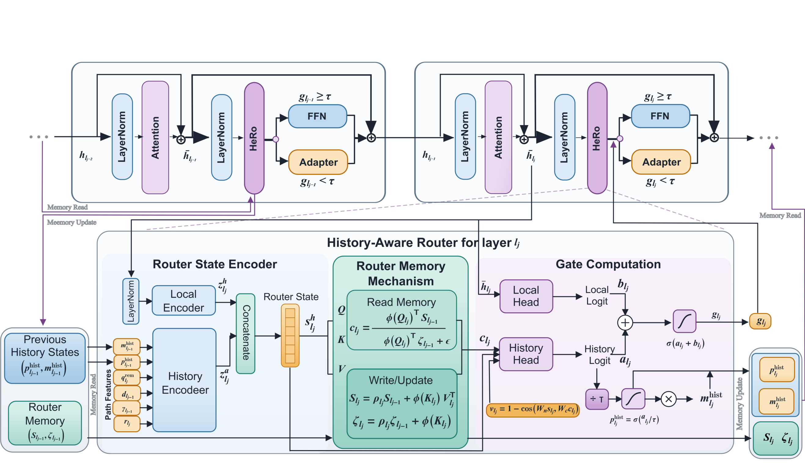
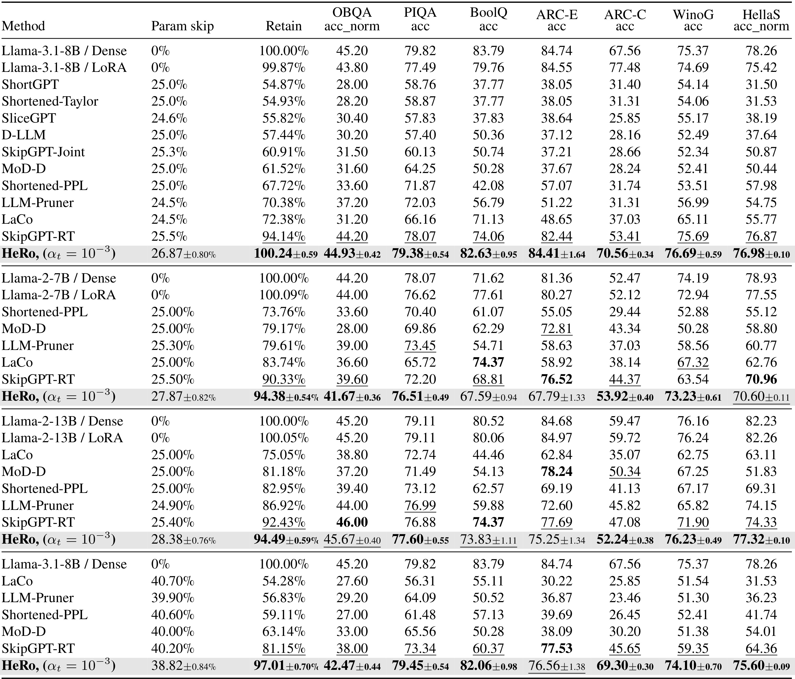
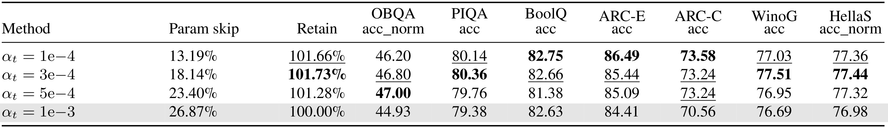
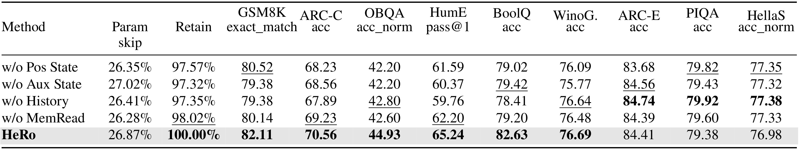
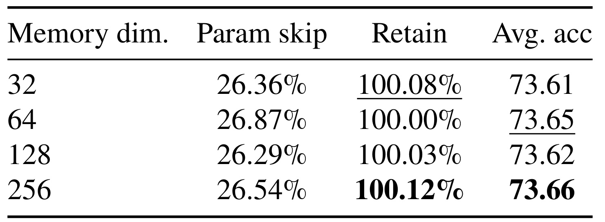

HeRo：让动态深度路由显式记住已走过的计算路径
《Do Dynamic Routers Need Memory? HeRo: History-Aware Routing for Efficient LLM Inference》由中山大学 Hongjin Lin、Wentao Wan、Keze Wang 完成，前两位作者共同一作，Keze Wang 为通讯作者，2026 年 9 月 8 日公开于 arXiv。本文研究如何在冻结语言模型骨干时，让轻量路由器按 token 选择执行原有前馈网络或适配器。论文入口。截至本次核验，未发现并核验到本文独立官方代码或项目页。以下分析依据九页原文，页码使用 PDF 页序。
动态路由中的每一次决策都会改变后续层看到的残差表示，而层使用惩罚又把所有路由决策联合约束起来；仅凭当前隐藏状态作局部判断，无法显式保留此前门控选择及其造成的表示变化。论文要补上的，正是沿模型深度持续可见的路由历史。
1. 背景和问题
1.1 从固定深度到按 token 分配计算
自回归语言模型生成下一个 token 时，通常让当前表示依次经过全部解码层。对一段容易预测的固定表达和一个需要结合上下文才能确定的答案，模型执行的层数往往一样。引言据此提出动态计算的动机：预测难度随位置变化，而固定深度无法主动把计算集中到更需要它的位置。这里讨论的是单次前向内部、沿网络深度的计算分配，不能直接等同于给困难问题生成更多思维链 token。前者改变每个 token 穿过哪些计算模块，后者改变生成序列的长度；两者可以同时存在，也会共同影响最终成本。
已有路线各有不同的自由度。静态剪枝在推理前删去层、行列或结构组件，同一个压缩模型对全部输入采用相同结构。它的部署形状稳定，但难以照顾样本之间的难度差异。提前退出根据中间层的置信信号决定结束计算，一旦退出就无法继续利用更深层变换，因此可执行路径受限为连续前缀。动态层跳过可以越过某个中间模块后继续执行后续模块，允许非连续的深度路径。论文把 HeRo 放在第三类中，并选择只对前馈网络进行路由。注意力仍然逐层执行，模型仍可持续交换序列上下文，节省主要来自部分昂贵前馈变换被低成本适配器替代。
这个选择决定了论文能回答的问题范围。HeRo 不是将整个模型永久缩小，也不是把所有注意力与前馈计算都变成稀疏。所有原始权重保持冻结并继续存在，被跳过的权重只是对特定 token 没有参与本次计算。一个 token 可能执行某层的原始前馈网络，另一个 token 在同层走适配器；较深的层也可能在前面多次跳过后重新执行完整变换。由此可见，所谓深度预算不是简单的固定层数，参数跳过率也不是删除参数比例。这种细粒度灵活性有机会保护质量，同时给批量执行、内存读取和内核调度带来额外要求。
1.2 隐藏状态为何不等于方便读取的路径记录
论文的中心问题不是隐藏状态是否含有历史信息，而是轻量路由头能否方便、可靠地恢复对当前决策有用的那部分历史。残差流累计了前面层的变换结果，因此当前隐藏状态当然受到此前路由选择影响；但表示的首要职责是完成语言预测，它并不负责以可直接读出的字段记录前面用了多少次完整前馈、最近一层的门控倾向如何变化、距离路由区间结束还剩多远。把这些信息全部交给一个小型路由头从高维向量反推，可能造成额外的学习负担。作者因而将当前隐藏状态视为不完整的路由观测，而非声称其中绝对不存在历史。
可以沿实际计算链理解这种不完整性。假设两个 token 当前表示相似，但一个此前已经多次执行完整前馈网络，另一个刚经历连续替代。两者下一层适合的计算选择未必相同：前者可能已有足够变换，后者也可能需要恢复一次较强更新。单看当前表示会把这两段路径压缩到相似输入，而显式状态能让路由头直接看到近期历史和深度进度。这个例子是帮助理解作者动机的机制解释，并非论文展示的失败案例；原文没有给出这样的逐 token 可视化，也没有证明表示相似必然对应计算需求不同。因此，最终仍需依靠受控消融来判断显式历史是否有增益。
更进一步，训练目标本身也使各层决策相互依赖。HeRo 使用每个 token 在全部可路由层上门值之和的平方来惩罚前馈使用量。某一层门值的变化会影响整个总和，因此一层的优化代价与其他层有关。如果路由头只使用局部隐藏表示，决策输入和联合目标之间就存在作者强调的错位。深度进度与剩余路由比例提供当前位置的边界信息，历史分数和残差变化则补充已完成路径。它们不会精确等价于一个硬预算计数器，但能给联合优化提供更直接的上下文，使后续路由有机会依据已经发生的计算作调整。
1.3 记忆的含义与研究边界
这里的记忆需要和几类常见概念分清。它不是检索增强系统中的外部知识库，不存储用户长期偏好，也不是语言模型跨生成步骤维护的注意力键值缓存。每个 token 在一次前向开始时拥有清零的深度记忆，该记忆只在当前 token 经过可路由层时递推；不同 token 分别维护自己的状态。线性注意力把先前层形成的路由状态聚合为固定大小矩阵和归一化向量，使当前层能读取历史摘要。固定大小避免直接保存随层数不断增长的完整历史序列，但矩阵大小仍随记忆维度平方增长，因此“紧凑”是相对于完整历史而言的结构性质，不能直接推出生产环境没有额外显存成本。
论文与跨层专家路由工作的联系在于，都把路由选择视为具有连续状态的过程。不同之处是 HeRo 在稠密语言模型中选择原始前馈网络与适配器，而不是从多个专家中挑选专家；它也没有像跨层表示聚合方法那样，直接重构语言模型骨干的主信息通路。新增状态主要服务于路由判断，原骨干被冻结，适配器和小型状态编码、记忆投影、门控头承担适应工作。这种局部改造降低了对预训练权重修改的要求，也意味着结果会受到适配器容量、监督训练数据和路由候选层位置影响，不能把最终全部收益只归因于记忆矩阵本身。
对大模型工程而言，这篇论文最值得跟踪的是“向控制器显式提供已发生的决策状态”这一设计选择。它把计算分配从只读当前内容提升为同时读取内容和执行过程，适合用来审视动态层选择、专家门控等系统的输入是否充分。对推荐系统而言，可能的联系是多阶段排序或级联模型中的动态计算分配，但原文没有推荐任务、线上请求或收益评估；将它直接解释成推荐模型有效方案会越过证据。阅读时应围绕三个可检验问题展开：质量能否在相近跳过比例下保留，历史路径各部分是否具有独立增益，以及由少参与计算的参数能否转化为真实的服务速度收益。本文对前两者给出了离线证据，对第三者仍留下了明显空白。
2. 方法
2.1 FFN 分支选择
HeRo 在预先选定的可路由层上执行四步：构造状态、读取历史、生成执行门、写回记忆。每层先完成稠密注意力，再决定使用冻结的原始前馈网络还是可训练瓶颈适配器。图一从概念层面展示这条路径与仅依赖当前隐藏表示的局部路由的差别。实际前向仍会贯穿全部注意力层，被替代的是有资格参与路由的前馈模块，适配器与原始前馈之间保持相同的输入输出维度，从而能够继续接入残差流。

图一左侧把完整前馈、直接跳层、适配器与提前退出放在同一概念对照里，表示现有动态计算可以选择不同执行动作，并不是本文同时实现了所有左侧分支。右侧才是 HeRo 的具体取舍：注意力模块始终存在，粉色路由模块读取紫色历史状态，再让当前 token 进入前馈或适配器其中之一，两个分支输出继续汇入残差流，最后仍由语言模型头预测下一个 token。右侧沿深度排列的状态符号强调，每一层路由并非孤立决策；前层形成的状态被后层读取，后层又更新它，构成深度方向的闭环。图底部的生成序列只说明整个过程嵌入自回归语言建模，并不意味着右侧记忆直接从上一生成 token 继承。图中的层一、层二也属于示意层编号，实际实验并非从模型第一层就开启路由。这个图区分了方法结构和执行对象，但没有呈现任何延迟、显存或吞吐结果；它解释计算可能被省在什么位置，不能单独证明省下的计算在硬件上兑现。适配器仍执行变换，所以“跳过原始前馈”不等于这一层完全没有成本。读图时还需留意，概念图没有显示输出缩放，而原文公式三对被选中的残差分支乘了连续门值，这一实现细节会同时影响训练梯度和推理结果。
符号解释：$l_j$ 是第 $j$ 个可路由块的实际层号，$h$ 是块输出，$\bar h$ 是注意力之后的残差表示，$u$ 是归一化的前馈输入；$W_1$ 把模型维度降到瓶颈宽度 $d_r$，$W_2$ 再升回原维度，SiLU 是非线性函数。上述合并对应原文公式一、二。适配器采用独立于冻结前馈权重的可训练参数；在主配置中瓶颈宽度为八百九十六。注意力输出既进入原来的残差计算，又为路由提供内容表征，因此路由不需要提前预测尚未完成的当前注意力结果。
符号解释：$g$ 为取值在零和一之间的执行门，$\tau_{\rm exec}$ 为共同执行阈值，FFN 表示冻结前馈网络。原文公式三采用硬选择、单分支执行、连续门值缩放：不仅选择哪条分支，还将选中输出乘以门值或其补数。训练和推理都用相同阈值分支，阈值比较本身不求导，但输出缩放让语言建模损失可向路由器传播梯度。因此复现时不能把它替换成简单二值掩码，也不能理解为同时算完两个分支后进行软混合。前者会改变梯度路径，后者会改变真实参与计算的模块和计算量。
2.2 路由状态和深度记忆

图二上部保留两个连续可路由块，展示注意力、归一化、前馈或适配器和残差相加的正常执行顺序；下部把其中一个 HeRo 模块放大。左侧状态编码器有两种输入，一种是当前注意力后的隐藏表示，另一种是深度位置、剩余层比例、已经完成的残差变化，以及上一个和累计历史分数。两路编码拼接形成小维度状态，再投影为查询、键和值。绿色记忆模块使用当前查询读取此前积累的矩阵，生成历史上下文；紫色门控区同时接收这段上下文与当前状态，并保留一条直接读取隐藏表示的局部头。两个头的输出相加后产生实际执行门。图右下角保存的新历史分数、累计分数和记忆状态供后续可路由块使用，紫色箭头则区分读取与更新的信息方向。必须遵守先读旧记忆、后写当前状态的顺序，这样当前门不会通过记忆读取到自己刚写入的状态，深度因果关系才与公式一致。还应注意，当前选择造成的残差变化要等下一决策点才被观测，所以图中的“历史”既包括立即携带的分数，也包括下一层才完成的变换观测，而非当前决策已经知道全部后果。图中状态编码、记忆和历史头属于新增可训练模块，顶部原始注意力与前馈权重保持冻结；这一分工使历史机制服务于计算选择，而非另外生成语言内容。
符号解释：$x^{\rm path}$ 是六个标量构成的路径向量，$L_R$ 是可路由层总数，$r$ 与 $q^{\rm rem}$ 给出进度和当前决策之后剩余比例，$d$ 与 $\gamma$ 描述已经完成的残差变化，$p^{\rm hist}$ 和 $m^{\rm hist}$ 是历史头的上一分数与累计分数。这里合并原文公式四、六。进度按可路由块序号归一化，不能误用原模型实际层号除以总层数；当候选层集合改变时，两种位置定义会产生不同数值。六个特征中有些属于显式决策记录，有些只是近期表示变化的概括，它们共同提供可观测的路径信息。
符号解释：$\delta$ 是相邻可路由决策点之间、两个注意力后表示的差，$d$ 是其欧氏范数，$\gamma$ 为相邻两次变化的余弦相似度，$\epsilon$ 防止零分母。首个变化设为零，前两个决策点的余弦特征也设为零，对应公式七、八。这个差值包含两个决策点之间所有已完成计算的综合影响，通常还包括当前注意力的贡献，不能把它写成纯粹的上一层前馈输出。范数提供变化大小，余弦提供连续变化方向是否一致；二者都没有显式标记“正确”或“错误”，其计算价值要由训练学习。
符号解释：$z^h$ 编码当前内容，$z^a$ 编码路径标量，$s$ 为拼接后的路由状态，$W_{hd}$ 与 $W_{hu}$ 是内容编码投影，$W_q,W_k,W_v$ 为查询、键和值投影。此处合并公式五、九、十，分号表示向量拼接而非加法。主配置内容编码四十八维，路径编码十六维，总状态六十四维，记忆投影也为六十四维。编码器、记忆投影和门控头跨可路由层共享参数，从而用同一套函数理解不同深度的决策；逐层差异主要通过位置特征、输入表示、历史内容、独立适配器及遗忘因子表达。
符号解释：$S$ 是此前累计的记忆矩阵，$\zeta$ 是归一化向量，$c$ 为当前读取到的历史上下文，正值特征映射 $\phi$ 保证线性注意力归一化的基本形式。这对应公式十一。每个 token 的初始矩阵和向量为零，所以第一次读取没有历史内容；后续查询可根据当前状态改变对历史聚合的读取方向。这里的线性是沿深度累积的形式，避免显式构造层与层之间的完整注意力矩阵，但矩阵存储为 $d_m\times d_m$，并不对记忆维度线性。它是有损摘要，无法恢复任意早期层的完整路由序列。
符号解释：$\rho$ 是逐层可学习的遗忘系数，$\eta$ 是它的未约束参数，$\sigma$ 是 sigmoid，外积将当前键和值写入矩阵。公式十二在完成旧记忆读取后执行，新状态本身包含此前已经完成的路由信息；当前门值与当前执行带来的后果在下一块再成为路径特征。主配置把遗忘系数初始化到约零点九八，让较早状态保留但逐步衰减。共享记忆投影不等于所有层遗忘行为相同，遗忘参数与适配器一样具有层专属性。若许多层都把旧内容强烈衰减，较远历史仍可能丢失，论文没有提供遗忘系数训练后的分布来进一步检验这一点。
2.3 历史分支与局部分支的合流
符号解释：$\nu$ 衡量当前状态与历史上下文投影后的余弦差异，$W_n,W_c$ 把二者映射到共同比较空间，$f_\theta$ 为历史头，$a$ 是历史 logit，$T_{\rm hist}$ 为温度，$p^{\rm hist}$ 为历史头分数，$m^{\rm hist}$ 为累计乘积。公式十三到十五在这里合并，首个决策点的差异设为零，初始上一分数和累计分数均为一。累计乘积会随深度递减，其含义是传递历史头的连续轨迹摘要，不是实际执行门的乘积，也不是已经执行完整前馈的次数。历史头分数只由历史 logit 生成，而实际门还包含局部头，两个量必须分开记录。
符号解释：$f_\psi$ 是局部头，$b$ 为其直接读取当前注意力后表示产生的 logit，$g$ 为两头融合后的真实执行门，对应公式十六。两个头在主配置都采用隐藏宽度二百五十六，执行阈值为零点五，历史温度为零点九。局部头保留基于当前语义判断计算需求的能力，历史头则对这一判断施加与路径相关的修正。门值不是对两种路径未来收益进行显式枚举得到的概率，训练也没有价值函数或策略梯度；“序列决策”是作者对依赖结构的刻画，不能据此把方法归类为强化学习算法。
2.4 冻结骨干的利用率约束训练
符号解释：$\mathcal L_{\rm LM}$ 为下一个 token 预测损失，$B$ 为批量大小，$T$ 为序列长度，$g_{b,l_j,t}$ 为指定样本、层和位置的门值，$\alpha_t$ 为使用惩罚系数。公式十七、十八对每个位置先沿路由深度求门值总和，再平方，最后在有效预测位置平均；平方不能移到逐层求和内部，否则跨层耦合消失。更大的总使用倾向受到更强惩罚，但该项控制的是连续门值而不是实际参数加权成本，因此它是预算代理，不是每个 token 都严格满足目标跳过率的硬约束。训练只更新适配器、状态编码器、记忆和两类路由头，骨干冻结；损失要求预测质量和省计算同时成立，门控缩放提供局部梯度而硬阈值仍可能产生边界敏感性。
3. 实验结果
3.1 数据、预算与指标的比较口径
实验以 Meta-Llama-3.1-8B-Instruct 为主要受控骨干，并在 Llama-2-7B 与 Llama-2-13B 上检查迁移。目标参数跳过预算为百分之二十五时，可路由候选集合是各骨干的后一半前馈模块；较早层及全部注意力保持稠密。在 Llama-3.1-8B 的百分之四十目标预算实验中，候选集合扩大为第九到第三十二层。候选集合规定哪些层有资格被替代，具体 token 是否走原始前馈仍由路由决定。因此两种预算之间不仅改变了实现跳过比例，也改变了可路由深度范围；把二者视为只调一个门阈值的结果并不准确。本文统一阈值，没有展示根据请求动态调整阈值的服务策略。
训练使用 Tulu-3 SFT 混合的 939,344 条样本，一个 epoch，全局批量 128，约 7,339 次优化更新。使用各骨干聊天模板，序列截断到 2,048 token，语言建模损失覆盖全部 token。优化器为 AdamW，学习率为十的负四次方，权重衰减 0.01，前 3% 更新用于线性预热，梯度裁剪 1.0；采用梯度检查点和 bfloat16 混合精度。原文报告四张每张 48 GB 的 RTX 4090D、单轮约十二小时。这些是作者训练配置，未经过独立运行验证，也不构成推理效率数据。主要 HeRo 比较采用 42、43、44 三个随机种子并报告均值与标准差。
七项主评测通过 lm-evaluation-harness 实施。OpenBookQA 和 HellaSwag 使用归一化准确率，其余 PIQA、BoolQ、ARC-Easy、ARC-Challenge、WinoGrande 使用准确率。ARC 两项使用二十五个示例，HellaSwag 与 WinoGrande 使用五个，OpenBookQA、PIQA、BoolQ 为零样本；需要指令格式的任务启用聊天模板，并按任务定义渲染多轮示例。扩展消融另外加入 GSM8K 与 HumanEval，前者采用八个思维链示例、最大生成长度 1,024、精确匹配指标，后者采用零示例、贪心解码和一次生成通过率。由此可知，多步推理和代码生成的证据确实存在，但在扩展消融套件中，不属于主表七项保留率。
主表的 Retain 是先对每项任务计算当前模型分数除以相同骨干 Dense 分数，再对七个比值平均并乘百分之百。它与直接平均准确率、平均准确率之比都不完全相同，也不表示每项任务都保留了同一比例。参数跳过率则是对 token 平均的未参与计算参数比例，并以模型总参数数归一化；不同基线可能跳过整层、注意力或前馈，论文用参数量统一对比尺度，但计算单元并不相同。静态和动态方法因此具有相近目标预算，而非严格相同浮点运算数、带宽或墙钟耗时。后面所有相对提升都应先检查本表分母，避免不同含义的 Retain 在汇总时混为一谈。
3.2 主结果：跨骨干保留率与较紧预算

表一按骨干和目标预算分为四组，左侧列出方法、实际参数跳过率和相对 Dense 的平均任务保留率，右侧七列是各任务的原始百分数分数。第一组覆盖十种剪枝或路由基线，后续组主要保留在首组表现靠前的方法，不应说所有十种方法在每个骨干和预算上都被完整重复比较。Llama-3.1-8B 的 HeRo 实际跳过率为 26.87%，标准差 0.80 个百分点，Retain 为 100.24%，标准差 0.59 个百分点。最强动态对照 SkipGPT-RT 在 25.5% 跳过率下保留 94.14%，两者保留率差 6.10 个百分点。HeRo 在这一组七个任务上均高于会跳过参数的对照，说明其优势不限于单一主导任务。然而相对 Dense，它在 OpenBookQA、PIQA、BoolQ、ARC-Easy 和 HellaSwag 仍有下降，主要由 ARC-Challenge 和 WinoGrande 的提升补偿；“平均匹配 Dense”不能写成“每个能力完全无损”。表中粗体和下划线是会跳过参数方法之间的排名，不能据其视觉强调忽略 Dense 或 LoRA 的更高单项分数。
同一表格在 Llama-2-7B 上得到 27.87% 跳过与 94.38% 保留，在 Llama-2-13B 上为 28.38% 跳过与 94.49% 保留。两者都优于组内跳过参数方法的聚合 Retain，但已明显低于 Dense，说明主骨干近乎无损的结果不应不加限定地推广到所有模型。尤其七十亿骨干的 ARC-Easy 从 Dense 的 81.36 降至 67.79，而 SkipGPT-RT 为 76.52；HeRo 的平均排名并没有掩盖这列的实际损失。一百三十亿骨干在 BoolQ 和 ARC-Easy 也没有战胜全部跳过基线。跨骨干复现的是聚合指标领先这一方向，而非每个任务的绝对领先或完全相同的收益幅度。
第四组把 Llama-3.1-8B 目标预算提高到 40%。HeRo 实际跳过 38.82%，Retain 为 97.01%；SkipGPT-RT 实际跳过 40.20%，Retain 为 81.15%，保留率差扩大至 15.86 个百分点。HeRo 在七项中领先六项，唯一例外 ARC-Easy 为 76.56，低于对照 77.53。这里的跳过率并不完全相同，HeRo 少跳过 1.38 个百分点；差异不足以直接抹去大幅质量差距，但仍必须如实披露。结果与“更强路径扰动下历史信息更有帮助”的解释一致，却没有通过路径相似度、门控分布或错误归因直接证明这一因果机制。主表也给出不跳过的 LoRA 参考，主骨干聚合保留率 99.87%，其作用是帮助审视监督适应效应，而非把路由和适配器增益彻底解耦。
统计上，接近 100% 的 HeRo 平均值与 0.59 个百分点的跨种子标准差一起报告，因此最稳妥的措辞是总体接近 Dense，并在报告均值上略高。三个种子能反映训练随机性，但论文没有给出对每项测试样本的成对显著性检验，也没有给所有对照相同的种子分布。因而不能把 0.24 个百分点的聚合超越当成稳定质量提升的确定证据。相比之下，较紧预算下与强对照的差距更大，但其可部署性仍需时间成本测试支撑。主表最扎实的结论是：在作者的训练数据、模型、候选层和任务套件下，HeRo 的质量与参数参与量折中具有明显竞争力。
3.3 系数扫描：控制的是软使用倾向

表二将惩罚系数从十的负四次方依次增至三倍、五倍和十倍，实际参数跳过率由 13.19% 提高到 18.14%、23.40% 和 26.87%，说明作者选择的这组设置下，增强惩罚可以单调提高跳过比例。对应 Retain 为 101.66%、101.73%、101.28% 和 100%。这些保留率的分母是本次系数扫描中十的负三次方配置的各任务分数，不是 Dense；同一主配置在表一写 100.24%，在表二写 100%，并不矛盾。若日报把表二的 101.73% 直接写成相对 Dense 增益，就改变了原文定义。因为这里仍是逐任务比值的平均，甚至也不能直接把两个表的 Retain 标量相乘来精确换算。保留原始任务分数，按统一基准逐项重算，才是跨表比较的可靠办法。此外，降低系数带来的保留率提高同时伴随跳过减少，也就是执行了更多原始前馈，因此不能据此宣称同算力条件下质量进一步提升。若要比较路由策略本身，必须先把各设置校准到相近实际跳过比例，或提供完整成本曲线；本表主要证明可调节的预算与质量折中，而非单一系数独立改进表示能力。
这组结果同时说明，降低使用惩罚能换取小幅聚合质量提高，但并非每个任务都随系数减小而单调改善。OpenBookQA 的最高值出现在中间系数，BoolQ 的变化也不是简单单调；主配置相较低系数在某些任务接近，在 ARC-Challenge 等列则有更明显差距。作者选十的负三次方，是在逼近目标跳过预算与维持总体质量之间取得一个操作点，而非找到普遍最优超参数。表二采用三种子均值但没有逐格标准差，因此不同低系数之间零点几分的排序不宜过度解释。它也没有给每个 token 的跳过率分布，平均预算达标可能伴随容易位置和困难位置很不同的计算分配；这种差异正是动态路由想利用的能力，同时也应在后续分析中被直接展示。
3.4 历史消融：数学与代码任务提供了直接证据

表三把完整 HeRo 作为 100% 的归一化参考，聚合范围从七项扩展到九项，因此它的 Retain 既不同于表一的 Dense 分母，也不同于表二的七项系数扫描。去除位置状态、辅助状态、整个历史分支、记忆读取四个变体的 Retain 分别为 97.57%、97.32%、97.35% 和 98.02%。实际跳过率都在 26.28% 到 27.02% 之间，完整模型为 26.87%，故聚合质量优势不能简单归因于 HeRo 总是使用更多计算。去辅助状态的变体跳过略多，其余多数变体反而跳过略少却性能下降，这为显式历史有贡献提供了比主表更直接的证据。不过各变体实现的跳过率仍不是精确匹配，只能称比较接近。更严格的比较应调节各变体使用惩罚，画出覆盖共同成本区间的质量曲线，而不只在一个配置点上对齐。
去历史分支后，GSM8K 从 82.11 降为 79.38，下降 2.73 个百分点；HumanEval 从 65.24 降为 59.76，下降 5.48 个百分点。这两列对应摘要所说多步推理与代码生成的明确实验支撑。BoolQ 也下降 4.22 个百分点，ARC-Challenge 下降 2.67 个百分点，OpenBookQA 下降 2.13 个百分点；因此不能把收益全部解释成数学或代码特有。与此同时，去历史后 ARC-Easy、PIQA、HellaSwag 略高于完整模型，WinoGrande 只降低 0.05。准确的概括是九项平均下降、其中六项下降，而不是所有任务一致下降。尤其本文没有展示各任务生成过程中的路由轨迹，无法进一步确认收益来自“多步推理”中哪个阶段。
保留历史头但关闭记忆读取，HumanEval 为 62.20、GSM8K 为 80.14，仍低于完整模型但比移除整个历史分支更好。这说明辅助状态和历史头即便无法读取累积记忆仍有部分作用，而显式读取又带来额外收益；单纯增加一个额外头不能恢复完整设计。去辅助编码器的损失则支持六维路径特征有信息价值。对于“位置状态”变体，正文描述涉及移除进度与残差过渡特征，不能仅凭名称把它解释为只删一个层号字段。论文的消融能支持组件组合有效，但缺少参数量完全匹配的额外局部网络、更长当前表示编码、随机历史或打乱历史对照，因此尚不足以分离额外容量、显式特征和历史因果顺序各自贡献的精确比例。
3.5 记忆维度、效率与尚未回答的部署问题

表四把记忆维度设置为 32、64、128 和 256，其参数跳过率在 26.29% 到 26.87% 之间，平均准确率在 73.61 到 73.66 之间，仅差 0.05 个百分点。作者据此认为质量对该范围内维度不敏感。256 维 Retain 最高为 100.12%，但 64 维实际跳过最多，三项指标不存在一个维度全部占优。表中 Retain 的基准行是 64 维配置，而平均准确率是另一种聚合；32 维平均准确率略低却 Retain 略高，正提醒读者逐任务归一化平均和直接准确率平均不是同一计算。表四 caption 没有像前几表那样完整重申 Retain 分母，本笔记根据 64 维为 100% 及正文主配置关系解读，正式复现应让实现明确写出基准和任务集合。表格没有方差，几个维度间极小的质量差异也不能直接视为可重复的优劣排序。
维度敏感性的小波动还有一个实际含义：默认 64 维并不是通过明显质量收益压倒更小状态的选择。按原文记忆结构，每 token 矩阵元素数是维度平方，64 维为 4,096 个元素，256 维为 65,536 个元素，相差十六倍；另有归一化向量和投影开销。这个元素计数由结构直接计算，不是作者报告的显存测量。是否值得把维度增大，需要同时测量运行时缓存布局和批量效率。表四没有吞吐、首 token 延迟、逐 token 延迟、峰值显存或功耗列，所以不能把它当成系统效率表来证明某一维度最快。更小记忆也可能改变投影算子的硬件利用率，纯粹按元素数估算墙钟开销仍然不够。
全文最显著的效率证据缺口是缺少端到端推理时间。参数参与量降低具有计算意义，但实际墙钟收益还受到注意力固定成本、适配器和路由额外成本、逐 token 分支导致的批处理不规则，以及记忆矩阵读写影响。特别是在大批量预填充和小批量解码中，计算和带宽瓶颈可能不同，单一参数跳过率无法预测二者相同加速。本文也没有开放域长上下文、分布外提示、极长数学推理链或实际服务并发的鲁棒性测试，训练还截断为 2,048 token。因此能够确认的是离线任务质量与平均参数参与量的折中；在线吞吐、延迟收益和更长上下文稳定性均为数据未验证。
4. 总结
4.1 对贡献的判断
HeRo 的核心价值是给轻量控制器一段明确的执行历史，并用受控消融证明它在作者的设定中有用。当前内容编码、路径标量、线性记忆和双头门控各有职责：内容回答当前表示是什么，路径描述已经发生的变化，记忆聚合沿深度的上下文，门控把它们转成是否执行原始前馈的选择。这个设计保持主骨干冻结，具有改造局部、训练对象清晰的优点。最有说服力的实证是接近相同参数跳过比例下，历史组件改善九项扩展任务平均表现，并在 HumanEval 与 GSM8K 出现明确分数差。相较之下，“效率提高”目前主要停留在参数参与量代理上，尚未完成硬件测量层面的闭环。
从结果使用方式看，应把主骨干 100.24% 理解为接近 Dense 的平均表现，将两种 Llama-2 骨干约 94% 的保留率一起报告。较紧预算下 97.01% 的保留率值得关注，但它并不是代码与数学任务共同构成的平均值；这些任务只在组件消融中得到直接评估。把两套套件各自的结论保留在原有边界内，才有助于判断后续应用是否匹配。若目标是降低真实在线成本，下一阶段的衡量对象应从“跳过了多少参数”转向在同等质量下每请求成本、尾延迟和硬件吞吐，只有后者能回答部署价值。
4.2 局限与迁移边界
- 真实速度尚未量化。 没有端到端时间、吞吐或显存对照；动态分支和深度记忆可能抵消部分理论节省。需要针对预填充和解码分别测量，避免用参数比例直接承诺加速幅度。
- 历史贡献尚未完全解耦。 当前消融支持组合有效，但增加状态编码和历史头也增加容量；缺少参数量匹配的局部头、随机历史和顺序打乱对照，会限制对因果机制的解释强度。
- 泛化范围较窄。 三种骨干属于相近模型系列，主要数据来自同一监督混合，长上下文和新分布没有系统评测。跨骨干聚合领先不等于迁移到不同架构、语言或请求分布仍有同样收益。
- 预算控制是间接的。 平方门值总和并不等于精确参数加权成本，实际跳过率与目标有偏差。不同候选层集合还会改变可用计算空间，生产中的严格服务预算需要额外约束或校准。
- 可复现证据仍有缺口。 尚未核验到独立官方代码，部分消融没有逐项种子方差，表四指标定义简略。对门控缩放、读写顺序、历史分数与执行门的区分若处理不同，会得到结构上不等价的实现。
这些边界并不削弱显式状态作为控制输入的研究价值，而是决定迁移试验应该从哪里起步。若用于已有推理服务，应先选择与论文相近的模型和候选层范围，记录每层门分布、每请求实际成本和任务质量；如果用于推荐模型的动态级联，必须重新定义“状态”和“预算”的业务语义，并建立推荐标签上的对照。原论文没有任何点击率、排序指标或线上实验，不能用语言模型离线结果替代那些验证。尤其平均收益容易掩盖单项任务损失，部署方应按自身请求分布建立任务权重，而不是直接把论文七项等权 Retain 当成产品质量目标。
4.3 后续跟进
首先，应完成精确成本匹配的局部路由与历史路由比较，同时增加同参数量局部头、打乱层序历史和只保留最近状态的对照。这样能够判断收益究竟来自更强容量、近期辅助特征还是较长路径记忆，并帮助决定最小可用组件。其次，应在同等任务质量和相同硬件条件下分别报告预填充、解码、小批量及高并发的吞吐和尾延迟，记录路由与记忆额外开销，才能知道哪类负载真正获得收益。最后，应观察 GSM8K 与 HumanEval 中成功和失败样本的逐层路由、遗忘系数和累计分数变化，再扩展到长上下文和分布外输入，验证历史是否在困难样本上分配了更合理的计算。只有把质量、实际成本和可解释路径同时对齐，才能从本次离线折中结果进一步走向可判断的部署方案。